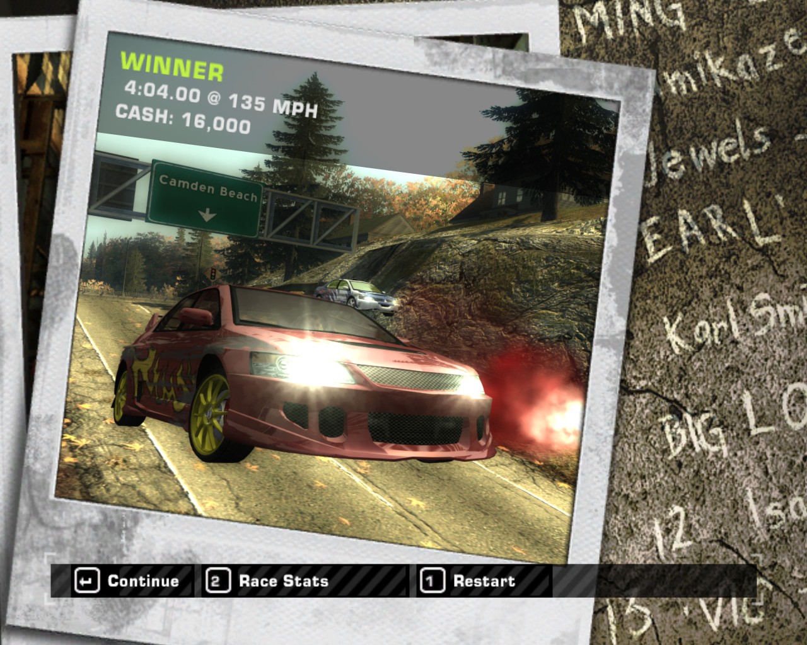

Introduction
"Need for Speed: Most Wanted" (2005) is often hailed as one of the greatest racing games ever created. Developed by BlackBox Studios and published by Electronic Arts, it is the ninth installment in the long-running Need for Speed series. The game set new standards in the racing genre, blending thrilling gameplay, an engaging open world, and a captivating storyline.
Why It's the Greatest Racing Game
1. Engaging Storyline
One of the standout features of "Most Wanted" is its gripping storyline. Players take on the role of a street racer aiming to become the most wanted driver in the city. The game begins with the player being betrayed and losing their prized car. The narrative revolves around reclaiming the car and climbing the ranks of the Blacklist, a group of the city's top racers.
2. Open World Exploration
"Most Wanted" introduced an expansive open world that players could explore at their leisure. The city of Rockport is filled with diverse environments, from industrial areas to scenic coastal roads, offering a variety of terrains and challenges. The open world design encourages exploration, with hidden shortcuts and secret paths that add depth to the gameplay.
3. Exhilarating Police Chases
The game is renowned for its intense police chases. The AI-controlled cops employ various tactics to stop the player, including roadblocks, spike strips, and helicopter support. The dynamic pursuit system keeps players on the edge of their seats, requiring quick thinking and skilled driving to evade capture.
4. Customizable Cars
Car customization is a core element of "Most Wanted." Players can modify their vehicles with performance upgrades, visual enhancements, and unique paint jobs. This personalization not only improves the car's performance but also allows players to express their individual style.
5. Soundtrack and Atmosphere
The game features an outstanding soundtrack that perfectly complements the high-octane gameplay. The music, combined with the game's detailed sound design, creates an immersive atmosphere that draws players into the world of illegal street racing.
6. Balanced Gameplay
"Most Wanted" strikes a perfect balance between arcade-style fun and realistic driving mechanics. The controls are accessible to newcomers, yet there is enough depth to satisfy veteran racers. The game’s progression system, involving winning races and completing challenges to move up the Blacklist, provides a satisfying sense of achievement.
7. Memorable Characters
The characters in "Most Wanted" are memorable and well-developed. Each Blacklist racer has a distinct personality and backstory, adding to the game’s rich narrative. The main antagonist, Razor, is particularly notorious for his cunning and ruthless tactics.
Conclusion
"Need for Speed: Most Wanted" isn't just a racing game; it's an exhilarating experience that has left a lasting legacy in the world of video games. Its innovative features and unforgettable moments continue to resonate with players, cementing its place as one of the greatest racing games of all time.
